Clay Soldiers
A fork of CSM, by CliffracerX
Project maintained by CliffracerX
Hosted on GitHub Pages — Theme by mattgraham
I will do more with this later, but for now:
I'm setting up a fork of Clay Soldiers, to add some stuff to.
I will add a fixed-feature list later, and possibly some videos n' such.
In the meantime, head to my main site (can be accessed from my profile page), and look at my other projects or donate some Dogecoin!
Some info
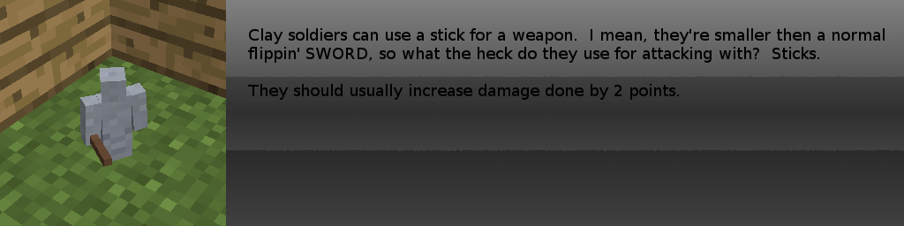
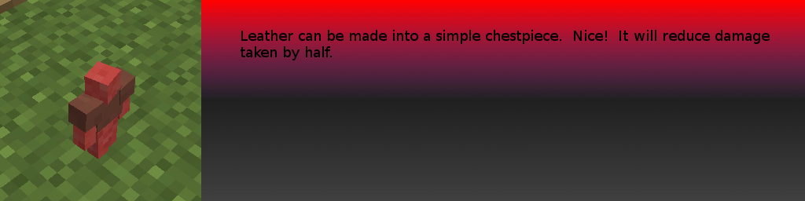
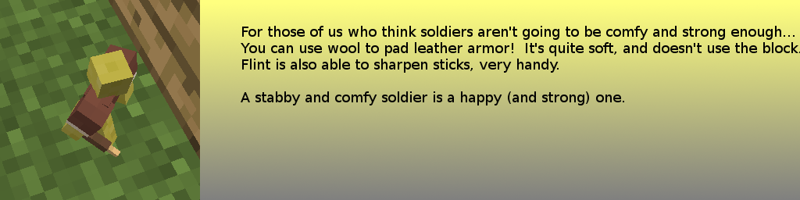
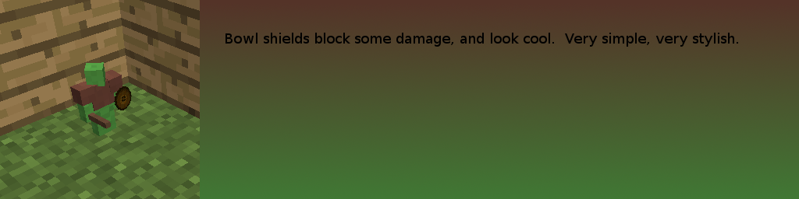
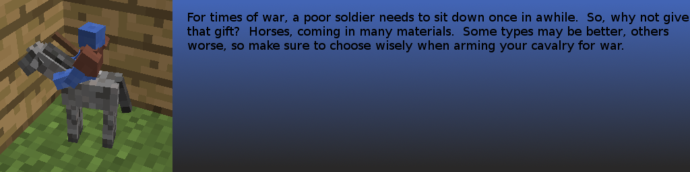
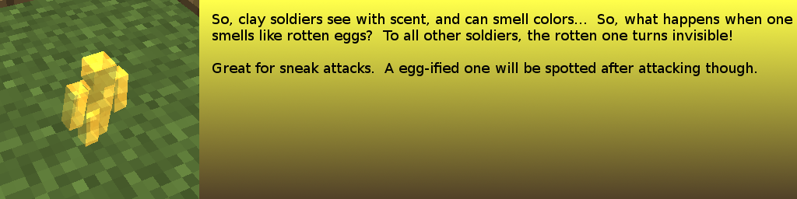
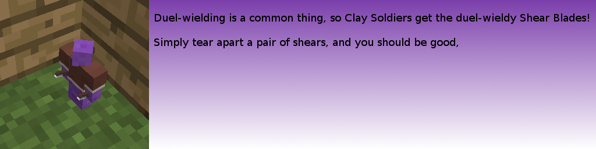
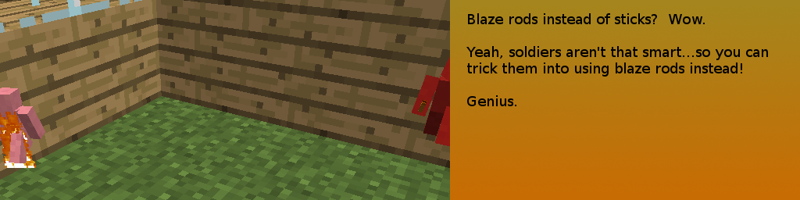
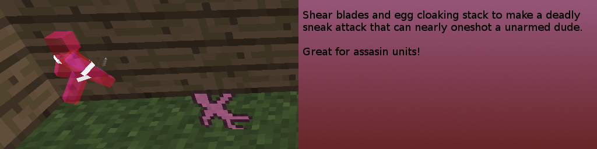
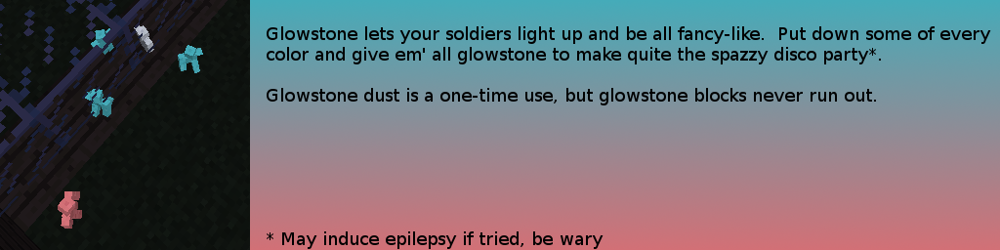
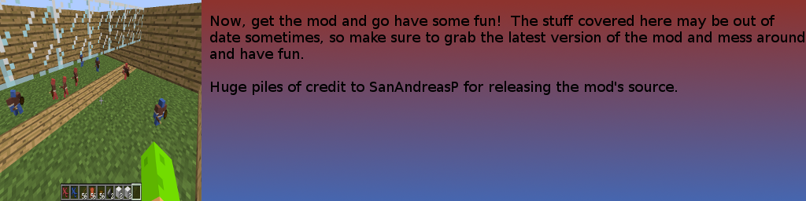
Install info
To install the mod for use on a client, simply download the fork from the button above, as well as the manager.
Insert both into your mods folder and you should be good to go! For forge 1.6.4.
To install the mod to mod it (Hurr durr), you need to get the right version of the manager pack's SRC (the one before ForgeGradle's update), and the sourcecode for my fork of CSM off github. Put the assets/sanandreasp folder from CSM into mcp/src/minecraft, and follow the install instructions from SapManPack.